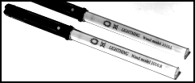
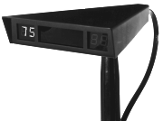

Buchla Lightning
Conjure music from thin air — two infrared wands, one optical tracker, and a DSP that reads your gestures as MIDI

Overview
The Buchla Lightning is a MIDI controller designed by synthesis pioneer Don Buchla, first released in 1991. It consists of two handheld, wireless wands that emit infrared light, and an optical receiver unit that tracks their position in space using triangulation. The performer waves the wands in the air, and the system translates the wands' X-Y position, velocity, acceleration, and directional changes into MIDI note and controller data in real time. A digital signal processor analyzes gesture — downward strikes can trigger percussion, lateral movements can bend pitch, and spatial zones can define entirely different instrument behaviors. The performer literally sculpts sound from empty space.
Three versions were produced: Lightning I (1991), Lightning II (1996), and Lightning III (2008). The original Lightning housed both the electronics and the optical sensor in a single box that mounted on a microphone stand. Lightning II separated the optics into a compact triangular remote head, moved the electronics into a half-rack cabinet, greatly extended the operating range (up to 12 feet high by 20 feet wide), and added a built-in 32-voice General MIDI synthesizer. Lightning III added a Z-axis (proximity) for depth sensing, though this axis was less precise than the X-Y tracking.
Lightning was hand-built in small quantities by Buchla & Associates in Berkeley, California, and sold direct to musicians for $1,995. It was never a mass-market product but occupied a unique niche among experimental composers, percussionists, and electronic performers seeking an embodied, theatrical way to control synthesis. The instrument was used by notable figures including George E. Lewis, Andrew Schloss, Lê Quan Ninh, Forrest Tobey (who rang in the millennium at Times Square with Lightning wands), and Joel Davel — Buchla's long-time collaborator who helped design and test the hardware. Lightning represents Don Buchla's shift from modular synthesis toward radical new controller interfaces, and stands as one of the earliest practical optical gesture-recognition instruments for live musical performance.
Deep dive
Don Buchla designed Lightning during a period (1989–2004) when he deliberately stepped away from building modular synthesizers to focus entirely on creating expressive alternative MIDI controllers. Lightning was the second in this series, following the Buchla Thunder (1990), a touch-sensitive tactile controller. Buchla was driven by a belief that traditional keyboard interfaces constrained electronic music expression, and he sought to create instruments where physical gesture mapped directly to sound. The original Lightning I (model 900) housed both the optical sensor array and all control electronics in a single metal box mounted on a mic stand. The two wands contained infrared LEDs powered by non-replaceable batteries (about 2 hours of life). The system used optical triangulation: the receiver's photosensors detected the IR light from each wand and computed 2D X-Y position. The wands also had momentary push-buttons to add discrete control events. Lightning II (1996) was a major redesign. The optical receiver became a small, lightweight triangular remote head (1.5 x 6 x 8 inches, 12 ounces), while the electronics moved to a half-rack cabinet (1.7 x 8.5 x 10 inches, 3 pounds). The wands were redesigned with replaceable AA batteries providing 15–60 hours of use, a blinking LED low-battery warning, and dual-range operation. The operating area expanded dramatically to roughly 12 feet high by 20 feet wide. Internal RAM presets increased from 12 to 30, ROM presets from 3 to 30, and a memory card slot added storage for 30 additional presets per card. A built-in 32-voice General MIDI synthesizer allowed Lightning II to function as a complete standalone instrument. The supervisory microprocessor was a Texas Instruments TMS370. Lightning III (2008) kept the same price ($1,995), the same wands, and nearly identical software, but added a Z-axis (proximity/depth) sensing capability. The triangular remote sensor became rectangular. The primary improvements were in sensitivity, resolution, accuracy, and response time. All three Lightning versions used the same core gesture-recognition engine and programming interface.
Lightning's interaction model was fundamentally spatial and embodied. The performer held one wand in each hand and moved freely within the sensor's detection zone. The system tracked four independent coordinates (X and Y for each hand) in real time, plus button state. From successive position readings, the TMS370 DSP computed instantaneous velocity and acceleration, then performed detailed gesture analysis to classify movement patterns. The performer programmed Lightning using an 'interface language' that mapped gestures to MIDI events. Common mappings included: mapping X-Y position to MIDI continuous controllers (creating invisible pitch wheels, pan pots, modulation wheels, or volume sliders in midair); analyzing strike gestures for direction and velocity to generate MIDI notes with velocity sensitivity (air drums); dividing the performance space into zones, each triggering different sounds or behaviors; and a conductor mode that analyzed beat patterns, displayed tempo deviations, detected missed beats, and transmitted a synchronized MIDI clock for controlling external sequencers. User-definable scale and tuning tables allowed pitch ranges and note selections to be mapped along any axis, with arbitrary note ordering — letting performers create 'invisible orchestras' arrayed in space. Buttons on each wand provided additional discrete triggers. The interaction was described by performer Joel Davel as resembling 'a hyperactive magician casting abracadabra spells into the ether' (Newsday), requiring both musicality and physical virtuosity. The MIDI.org article described it thus: 'Imagine if the batons held by a member of the ground crew to safely direct an aircraft into a gate at an airport controlled the pitch, timbre, and other aspects of sound generated by a synthesizer. That's essentially what Don Buchla's Lightning does.' Lightning lent itself particularly well to percussive styles, but could be programmed for any genre.
Buchla Lightning occupies a pivotal position in the history of gestural music controllers. It connected the theremin (the original analog spatial instrument from 1920) with later computer-vision and motion-sensing controllers. Max Mathews's Radio Baton (1986) and Palmtree Instruments' Airdrums (1986) were contemporaries, but Lightning was uniquely sophisticated in its real-time gesture analysis, wireless operation, multi-zone spatial mapping, and integration with the MIDI ecosystem. Lightning was commercially niche — hand-built in small batches, sold direct from Buchla & Associates in Berkeley at $1,995 — but it found adoption among academic computer music centers (IRCAM, CNMAT at UC Berkeley, CCRMA at Stanford) and experimental performers. George E. Lewis composed 'Virtual Discourse' (1993) for Lightning-controlled virtual percussion and four live percussionists, premiered at the Musée des Beaux-Arts in Bordeaux. Lightning wands were famously used by Forrest Tobey to perform a 'Virtual Orchestra' during the Times Square millennium New Year's Eve celebration in 1999/2000, seen by millions worldwide. After Don Buchla's death in 2016, Lightning production ceased. The brand was acquired by a new company (Buchla USA), which focuses on the 200e modular synthesizer series and does not offer Lightning. Units occasionally appear on the secondhand market, typically selling for $1,500–$2,500. The instrument's DNA is visible in later optical controllers like the Dimension Beam/D-Beam (licensed by Roland), and it presaged the gesture-control paradigm that became mainstream with the Nintendo Wii (2006) and Microsoft Kinect (2010). Lightning was recognized in Joel Chadabe's 'Electric Sound' (1997) and Bart Hopkin's 'Gravikords, Whirlies & Pyrophones' (1996) as a landmark experimental instrument.
Team & pioneers
- Don Buchla. Inventor, designer, founder of Buchla & Associates
- Joel Davel. Primary hardware assistant, PCB designer (post-1995), alpha tester, preset author, and virtuoso performer
- Forrest Tobey. Lightning virtuoso, Peabody Conservatory artist-in-residence; performed Virtual Orchestra at Times Square millennium celebration
Media


Sources
- Wikipedia: Buchla Lightning
- Buchla & Associates — Lightning II Description (archived)
- Buchla & Associates — Lightning II Technical Specifications (archived)
- MATRIXSYNTH: Buchla Lightning MIDI controller (detailed photos, serial #1037)
- MIDI.org: Alternative Controllers (Mark Vail, features Lightning II)
- Joel Davel — Lightning II page (performer description, photos)
- Keyboard magazine review of Buchla Lightning, September 1991, p.148
- YouTube: What is a Buchla Lightning? (Joel Davel explains)
- YouTube: Joel Davel — Out of Thin Air on Buchla Lightning